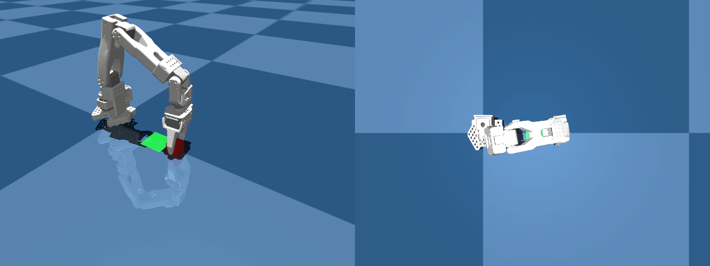
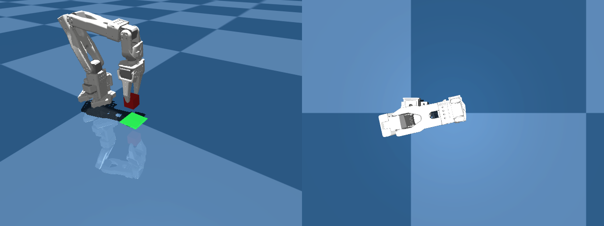
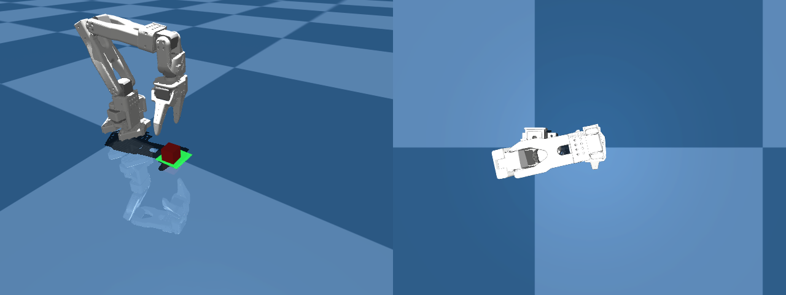
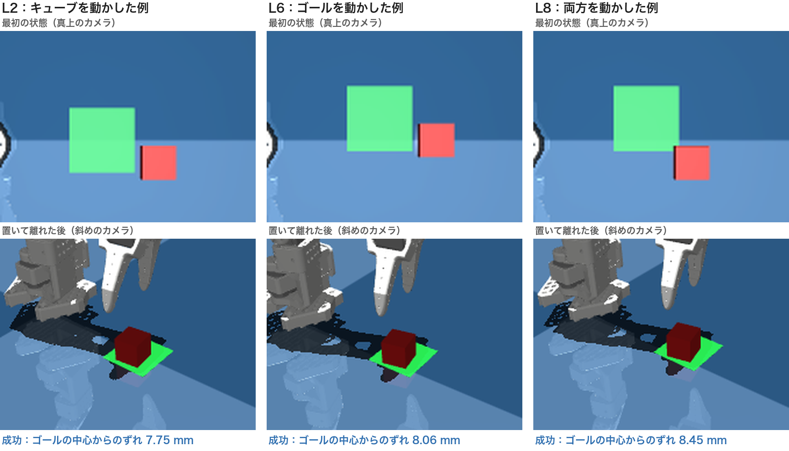
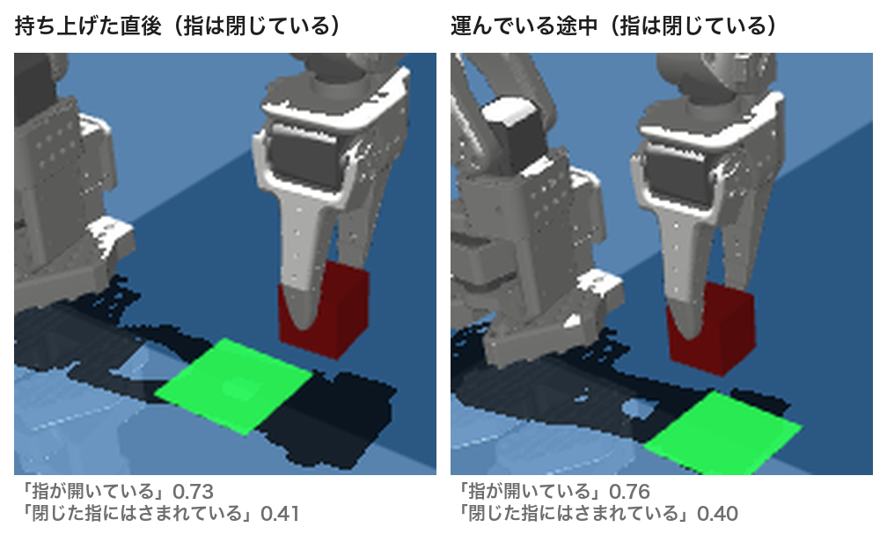
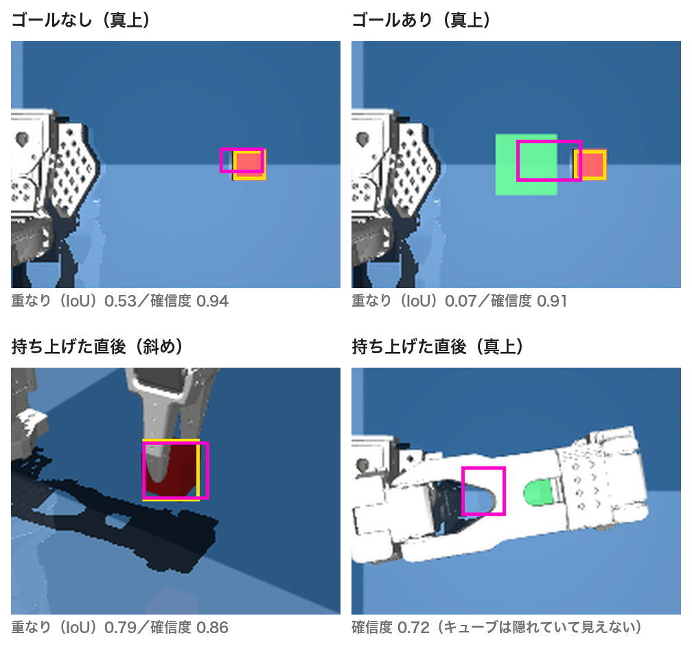
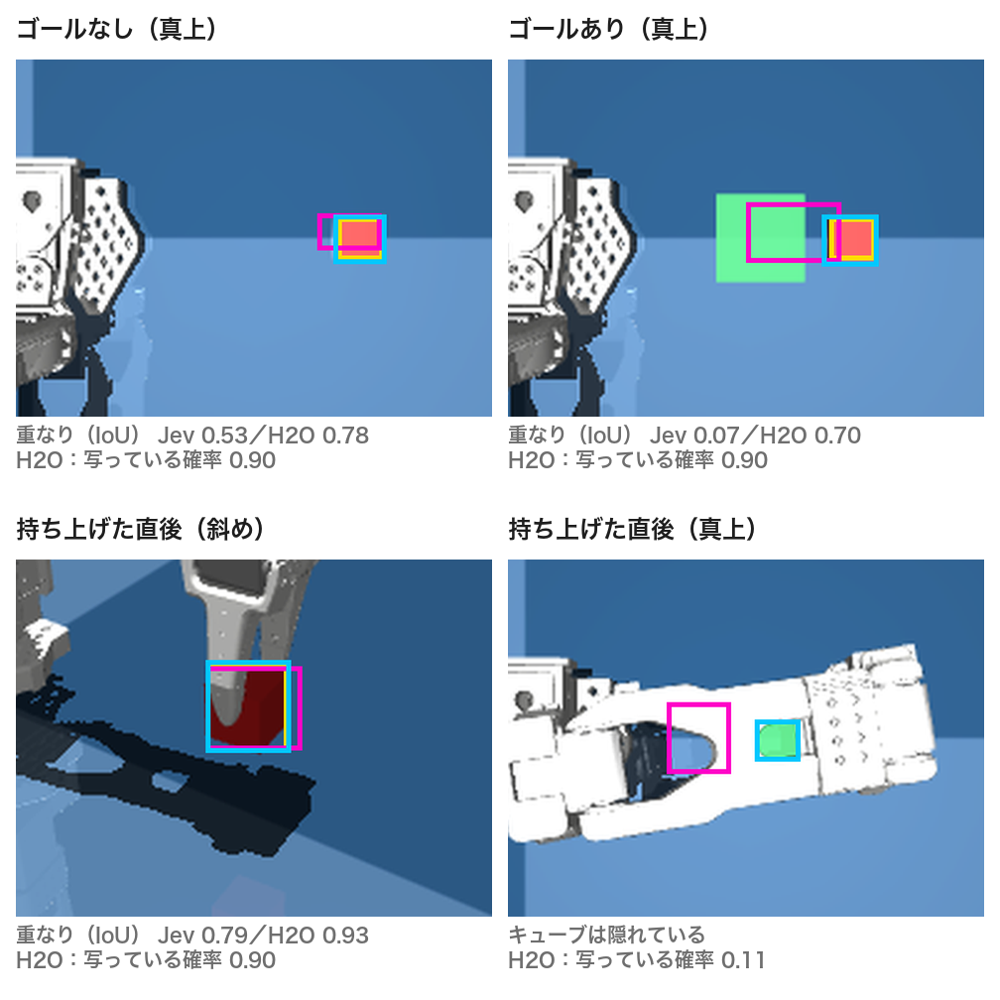

自然言語でスキルの選び方を書いて
SO-101 を動かす開発キット
― OSS の判断 AI で、生成 AI のコストを下げる ―
Physical AI 応用1講座 最終課題 説明資料 ／ シミュレーター：MuJoCo ／ ロボット：SO-101
コード・記録・動画：https://github.com/YukiHSun/pai-final-so101-open-decider
ロボット用の学習をしないで、SO-101 に「つかんで運んで置く」をさせる開発キットです。動きは 10 個のスキルとしてプログラムで用意し、AI には画像から分かった状態をもとに「次にどのスキルを使うか」だけを選ばせます。選び方は自然言語で書きます。
※ 9 通りは、手が作業を終えられると確かめた位置（41 通り中 20 通り）から選びました。画像を読む部分は Claude（有料）を使っています。
1. 背景
Physical AI を学び始めた人にとって、ロボットに「つかんで運ぶ」を成功させるまでの壁は高いです。よく使われるのは、VLA などのロボット用 AI に、お手本データで動きを学習させる方法です。しかしこの方法では、データ集め、GPU での学習、学習時と実行時のカメラ位置の違いの調整などが必要です。筆者も以前、シミュレーションで成功したお手本の動画と操作の記録（公開データ 100 回分）を元に SmolVLA を学習させてみましたが、持ち上げは 5 回とも最後のつかむところでずれて失敗しました。
一方、Claude などの生成 AI は、画像を見て「キューブが指にはさまれているか」を言葉で答えられるようになりました。そこで、動きを「つかむ」「運ぶ」のような意味のあるスキルに分け、AI には次のスキルを選ばせるだけにします。こうすれば、学習なしで、スキルの選び方を自然言語で書くだけでシミュレーションで成功体験を得られる開発キットを作れると考えました。
ただし、毎ステップの判断まで大きな生成 AI に任せると、呼び出すたびにトークン代と待ち時間がかかります。そこで判断は、選択肢から確率付きで選ぶことに特化した小さな判断 AI（System One 型）に任せます。2026 年 9 月に TypeSafe AI が判断 AI の Jev を公開してから、このように判断を Jev に任せる取り組みが、記事で多く紹介されるようになりました[1][2]。ロボットでも、Jev に次の動作を選ばせる例が相次いで紹介されていて、SO-101 をシミュレーターで動かす解説もあります[3][4]。ただし Jev は、高速で安いものの、有料の API で中身も非公開です。2026 年 10 月には、同じ形式で使える判断 AI が OSS として公開されました[5][6]。これを使えば、API キーも使用料も要らず、自分の PC で判断を回せます。初心者が気軽に試せる開発キットにするために、この OSS の判断 AI を採用できるかを検証しました。
2. 課題の概要（作った開発キット）
MuJoCo 上の SO-101（6 軸アーム）に、2 つの作業をさせました。
- 持ち上げる：3 cm の赤いキューブを 5 cm 以上持ち上げる
- 運んで置く：キューブを緑のゴールまで運び、中心から 10 mm 以内に置いて離れる
ここで自然言語で書くのは、あらかじめ用意した 10 個のスキル（3 章）を「どんなときに選ぶか」の説明です。言葉から新しい動きそのものを作るわけではありません。
役割は「目・頭・手」の 3 つに分けました。
| 役割 | 担当 | すること |
|---|---|---|
| 目 | コーディングエージェント（Claude Code、Codex など） | 各ステップの 2 視点の画像を見て、「キューブが指にはさまれているか」など 10 項目を yes / no / unclear で答える |
| 頭 | 判断 AI（System One 型） | 観測とロボットの状態から、次のスキルを確率付きで選ぶ。安全確認（例：「空中で持てているか」）の yes 確率も返す |
| 手 | プログラム（mink による IK + MuJoCo） | 選ばれたスキルを毎回同じように実行する。決められた順番以外の動きは拒否する |
利用者が書くのは、次の自然言語の文だけです。どれも 1 つのファイル（claude_jev_controller.py の TaskSpec）にまとまっています。
- 作業の目標（例：「キューブを持ち上げ、運び、緑のゴールの中に置いてから離れる」）
- 各スキルを選ぶ条件（例：「直前に持ち上げを終えたら、運ぶ前に一度握り直す」）
- 目の担当に答えさせる質問（例：「キューブはゴールの上にあるか」）
- 危ないスキルの前に聞く安全確認（例：「置く前に、キューブはゴールの上にあるか」）
Claude Code / Codex で実行するときの大まかな流れ
キットは Claude Code や Codex などのコーディングエージェントの上で実行します。エージェントがそのまま「目」になって、画像を読み、観測を書き、次のコマンドを実行します。生成 AI の API キーを別に用意する必要はありません。環境の構築から検証までを、エージェントに任せられます。
- GitHub のリポジトリを clone し、そのフォルダを Claude Code（または Codex）で開きます。手順は
AGENTS.mdに書いてあり、エージェントが自動で読み込みます（Claude Code はCLAUDE.md経由）。 - 日本語で頼みます。例：「このリポジトリで SO-101 の操作環境を構築して、テストが通ることを確かめて。判断 AI には H2O-Lightning-4B をローカルで起動して使い、pick_place を最初から最後まで実行して検証して。画像を見て観測を書き、終わったら動画も作って。」
- エージェントは、Python 環境の準備、判断 AI サーバーの起動、テスト、
start→ 画像を見る →stepの繰り返しを自分で進めます。[SUCCESS]か[STOP]が出たら止まり、最後に動画を書き出します。
今回の結果は、Claude Code で実行したものです。
判断 AI は、URL を 1 つ変えるだけで入れ替えられます（DECIDER_URL）。有料の Jev、strands-decider、H2O-Lightning-4B を同じコードで使えます。OpenRouter の判断 AI も、送り先・鍵・モデル名の 3 つを環境変数で指定するだけで使えます（DECIDER_URL、DECIDER_MODEL、OPENROUTER_API_KEY）。
3. スキルの説明
運んで置く作業は、次の 10 個のスキルを上から順に実行します（持ち上げる作業は 1〜4 と 10 の 5 個）。各スキルの動きはプログラムに固定されていて、AI は関節の角度も座標も出しません。AI が順番に合わないスキルを選んだり、確信度が 0.45 未満だったりすると、プログラムはその場で止まります。
| スキル | プログラムがすること | 実行前の安全確認（yes 確率 0.60 以上で実行） |
|---|---|---|
1. キューブの上へmove_above_cube | 画像から赤いキューブの位置を求め、開いた指をその 9 cm 上へ動かす | —（推定位置が作業範囲の外なら停止） |
2. 下ろすdescend | 開いた指を、キューブの高さまでまっすぐ下ろす | —（指先が 3 mm 以上ずれたら停止） |
3. つかむclose_gripper | 指を少しずつ閉じて、キューブを両側からはさむ | —（両方の指が触れていなければ停止） |
4. 持ち上げるlift | はさんだまま 6.5 cm 持ち上げ、そのまま保つ | 「両方の指でしっかりはさめているか」 |
5. 持ち直すsecure_grasp | 持ち上げで緩んだ握りを、空中で少し締め直す | 「空中で、指の間に持てているか」 |
6. 運ぶtransfer | 高さを保ったまま、ゴールの上まで水平に動かす | —（両方の指で持っていなければ停止） |
7. 置くlower | キューブをゴールの床まで下ろす | 「キューブがゴールの上にあるか」 |
8. 離すrelease | 指を開いて、キューブを放す | 「キューブがゴールの中の床に置かれているか」 |
9. 離れるretreat | 指を 6.5 cm 上へ離す | — |
10. 完了done | シミュレーター上の物理的な成功条件を確かめて終わる | 「キューブだけがゴールの中にあり、何も触れていないか」（条件を満たさなければ停止） |
4. 目的
このキットの「頭」を、有料の Jev から OSS の判断 AI に置き換えても、同じように作業を成功させられるかを確かめることです。試したのは、2026 年 10 月に公開された次の 3 つです。
- strands-decider[5]（AWS の研究チーム、Apache-2.0）：2B 版（Qwen3.5 ベース）、E4B 版（Gemma 4 ベース）
- H2O-Lightning-4B（H2O.ai、Apache-2.0）：判断 AI のベンチマーク JevBench で、公開モデルの中で 1 位。総合点は 72.5 で、Jev の 71.5 を上回る[7]。Mac で動く版（有志による MLX への移植版）[8]は、2026 年 10 月 12 日に初めて公開されたばかりで、今回はこれを使いました
どれも自分の PC（Apple Silicon）で動くので、判断の部分の使用料がかからず、判断に使うデータも外に出ません（画像を読む「目」の Claude と、後で触れる OpenRouter 経由のモデルは除きます）。現実の現場でも、通信が不安定な環境や、データを外に出せない工場などでの利用につながります。
この検証のあと、10 月 21 日に、さらに大きな判断 AI の elephant-1（90 億パラメータ）と mammoth-1（270 億パラメータ）が公開されました[9][10]。OpenRouter 経由で無料で使えたので、同じ方法で確かめました（6.4）。
5. 検証の方法
- 記録した質問の再送：Jev で実行したときに送った 19 回分の質問を、そのまま各モデルに送りました。比べたのは、Jev と同じスキルを選ぶか、合格ラインを越えるかの 2 点です。内訳は次のとおりです。
- 持ち上げる・成功：5 回
- 運んで置く・成功：10 回
- わざと失敗させた確認：4 回
jev_stateが送った状態です。 - 失敗を伝えたときの安全性：「つかみ損ねた」「ゴールの上にない」など、7 か所で観測を失敗の内容に書き換えました。そのうえで、危ないスキルに進まないかを確かめました。
- シミュレーションでの実行：目は Claude、頭は判断 AI として、最初から最後まで動かしました。
合格ラインは、Jev のときと同じにしました。
- スキル選択の確信度が 0.45 以上
- 安全確認の yes 確率が 0.60 以上
このどちらかを下回るか、順番に合わないスキルが選ばれたら、プログラムはその場で止まります。
6. 結果
6.1 記録した質問での比較
| 比べた点 | Jev | strands-decider 2B | strands-decider E4B | H2O-Lightning-4B |
|---|---|---|---|---|
| 合格ラインを越えた手（成功ランの 15 手中） | 15 | 4 | 4 | 14 |
| Jev と同じスキルを選んだ手（19 手中） | — | 15 | 14 | 18 |
| スキル選択の確信度（中央値） | ≈1.0 | 0.41 | 0.23 | 0.94 |
| 失敗を伝えたときに止まれた場所（7 か所中） | 7 | 7 | 7 | 7 |
| 1 回の応答時間（中央値） | 約 0.2 秒 | 約 0.5 秒 | 約 1.5 秒 | 約 0.9 秒 |
strands-decider は、Jev と同じスキルを選ぶことは多かったのですが、確信度が低く、持ち上げる前に止まりました。H2O-Lightning-4B は、15 手中 14 手で合格しました。どのモデルも、観測を失敗の内容に書き換えた 7 か所すべてで、危ないスキルの前で止まりました。なお、19 手は記録した質問を送り直したもので、ロボットを 19 回動かしたわけではありません。
6.2 H2O-Lightning-4B が手順を飛ばした一手と、その原因
H2O-Lightning-4B が Jev と違う選び方をしたのは、運んで置く作業の 5 手目、持ち上げた直後だけでした。Jev は「持ち直す」を選びましたが、H2O-Lightning-4B は「運ぶ」を選びました。シミュレーションで実行したときも、プログラムが順番違いとして拒否し、ここで止まりました。
原因は、AI に渡していた行動説明の文でした。
元の説明
- 持ち直す：「持ち上げた直後で、空中に持っている。運ぶ前に握り直す」
- 運ぶ：「しっかり空中に持っていて、ゴールの上にはない。ゴールの上へ運ぶ」
持ち上げた直後の様子は、この両方に当てはまります。「しっかり」持てているかどうかは、画像からは分かりません。
直した説明
- 順番の説明に、「1 つずつ順番どおりに進む。目的が済んでいるように見えても、スキルを飛ばさない」と書き足しました。
- 「持ち直す」と「運ぶ」を、見た目ではなく、直前に完了したスキルで区別する文にしました。
| 持ち上げた直後に AI がつけた確率 | 直す前 Jev | 直す前 H2O | 直した後 Jev | 直した後 H2O |
|---|---|---|---|---|
| 「持ち直す」（正しい次の手） | 0.79〜0.87 | 0.026 | 1.00 | 0.864 |
| 「運ぶ」 | 0.13〜0.21 | 0.949 | 0.00 | 0.111 |
| 記録した質問で合格した手（15 手中） | 15 | 14 | 15 | 15 |
直した後は、H2O-Lightning-4B も「持ち直す」を選ぶようになりました。Jev の迷い（0.79〜0.87）もなくなりました。19 回分の質問をすべて聞き直しても、ほかの手が悪くなることはありませんでした。
6.3 シミュレーションでの実行（目：Claude、頭：H2O-Lightning-4B）
| 作業 | Jev（比較の基準） | H2O-Lightning-4B |
|---|---|---|
| 持ち上げる（5 cm 以上で合格） | 成功 5.80 cm | 成功 5.80 cm |
| 運んで置く・説明を直す前 | 成功 7.87 mm | 5 手目で停止（順番違いを拒否） |
| 運んで置く・説明を直した後（10 mm 以内で合格） | — | 成功 7.87 mm（10 手すべて H2O が判断） |
| 1 回の判断時間 | 約 0.2 秒 | 0.8〜1.4 秒 |
| 使用料 | 作業 1 回あたり 1 円未満 | かからない |

つかむ（3 手目）
運ぶ（6 手目）
置いて離れる（9 手目）6.4 より大きな判断 AI（elephant-1 / mammoth-1）
Baseten の研究チームが公開した 2 つの判断 AI を、OpenRouter の Decisions API[11] 経由で、6.1〜6.3 と同じ方法で確かめました。どちらも Qwen3.5 をもとにしていて、10 月 27 日まで無料で使えました。説明文は、6.2 で直したものを使っています。
| 比べた点 | Jev | H2O-Lightning-4B | elephant-1（9B） | mammoth-1（27B） |
|---|---|---|---|---|
| 合格ラインを越えた手（15 手中） | 15 | 15 | 15 | 15 |
| Jev と同じスキルを選んだ手（19 手中） | — | 19 | 19 | 19 |
| 持ち上げた直後に「持ち直す」を選ぶ確率（元の説明文 → 直した説明文） | 0.79〜0.87 → 1.00 | 0.026 → 0.864 | 0.059 → 0.759 | 0.936 → 0.995 |
| 失敗を伝えたときに止まれた場所（7 か所中） | 7 | 7 | 7 | 7 |
| 運んで置く（シミュレーション） | 成功 7.87 mm | 成功 7.87 mm | 成功 7.87 mm | 成功 7.87 mm |
| 1 回の応答時間（中央値） | 約 0.2 秒 | 約 0.9 秒 | 約 0.4 秒 | 約 1.2 秒 |
どちらも、記録した 19 問すべてで Jev と同じスキルを選び、失敗を伝えた 7 か所すべてで止まれました。シミュレーションでも、運んで置く作業を最後まで成功させました（10 手すべてを各モデルが判断）。違いが出たのは、6.2 の持ち上げた直後の一手です。mammoth-1 は、元の説明文のままでも「持ち直す」を選びました。elephant-1 は、元の説明文では H2O-Lightning-4B と同じように「運ぶ」を選び（0.93）、直した説明文で正しく選べました。
H2O-Lightning-4B の失敗 7 か所と応答時間は、元の説明文で測った値です。記録：outputs/decider_{elephant,mammoth}_vs_jev_comparison.json、outputs/claude_{elephant,mammoth}/
6.5 位置を変えた 9 通りでの実行（成功率）
6.4 までは、キューブとゴールの位置が 1 通りだけでした。そこで位置を変えて、運んで置く作業を 9 通り実行しました。目は Claude、頭は H2O-Lightning-4B（6.2 で直した説明文）で、10 手すべてを判断 AI が選んでいます。
その前に、AI を使わずにスキルを決まった順番で実行する「下見」をしました。手（スキルと IK）が、そもそもその位置で作業を終えられるかを確かめるためです。下見した 41 通りのうち、作業を終えられたのは 20 通りでした。
- キューブ：作業を終えられたのは、x 0.21〜0.22 m、y ±0.02 m の付近だけでした。x 0.23 m 以上では、最初の移動で届く姿勢が見つかりませんでした。
- ゴール：y が +0.02 m の側や、x 0.15 m の端では、運ぶ途中で関節の動ける範囲を超えたり、キューブを落としたりしました。
9 通りは、下見で作業を終えられた位置から選びました。キューブだけを動かしたもの、ゴールだけを動かしたもの、両方を動かしたものを含みます。
| 比べた点 | 結果（9 通り） |
|---|---|
| 運んで置く作業の成功 | 9 / 9 |
| 10 手すべてを正しい順番で選んだ | 9 / 9 |
| スキル選択の確信度（いちばん低い値。合格ラインは 0.45） | 0.79 |
| 安全確認の確率（いちばん低い値。合格ラインは 0.60） | 0.80 |
| 置いた位置のずれ（合格は 10 mm 以内） | 7.75〜8.70 mm |
| 1 回の判断時間（中央値） | 約 1.0〜1.3 秒 |

outputs/claude_h2o_layouts/ にあります。| 位置 | 動かしたもの | キューブ (x, y) m | ゴール (x, y) m | ずれ | 確信度の最小 | 安全確認の最小 |
|---|---|---|---|---|---|---|
| L1 | 今までの位置 | (0.22, +0.00) | (0.16, +0.00) | 7.87 mm | 0.79 | 0.89 |
| L2 | キューブ | (0.21, -0.02) | (0.16, +0.00) | 7.75 mm | 0.82 | 0.86 |
| L3 | キューブ | (0.21, +0.02) | (0.16, +0.00) | 7.76 mm | 0.83 | 0.87 |
| L4 | キューブ | (0.22, +0.01) | (0.16, +0.00) | 7.99 mm | 0.83 | 0.86 |
| L5 | キューブ | (0.22, -0.02) | (0.16, +0.00) | 7.84 mm | 0.81 | 0.84 |
| L6 | ゴール | (0.22, +0.00) | (0.17, +0.02) | 8.06 mm | 0.83 | 0.83 |
| L7 | ゴール | (0.22, +0.00) | (0.16, -0.02) | 8.04 mm | 0.82 | 0.86 |
| L8 | 両方 | (0.21, -0.02) | (0.17, +0.02) | 8.45 mm | 0.82 | 0.80 |
| L9 | 両方 | (0.22, +0.01) | (0.16, -0.02) | 8.70 mm | 0.82 | 0.86 |
キューブがゴールのすぐそばにある L8 では、斜めのカメラだと、キューブがすでにゴールの上にあるように見える場面が 2 回ありました。目の担当は真上のカメラで確かめて「まだゴールの上ではない」と答え、H2O は正しい順番のまま進みました。
ただし、シミュレーションは毎回同じ動きになります。そのため、AI が同じスキルを選べば、結果は下見と同じになります。この 9 回で確かめたのは、位置が変わって画像の見え方が変わっても、目と頭が正しい順番で判断し、安全確認を通れることです。キューブが少しずれたときのつかみ方など、手そのものの強さは確かめていません。また、置いた位置のずれは 7.75〜8.70 mm で、合格ラインの 10 mm に近く、手の調整には余裕が少ないことも分かりました。
記録：outputs/h2o_layout_success_rate.json、outputs/claude_h2o_layouts/、下見：check_layouts.py → outputs/layout_feasibility.json
7. 工夫した点
- 役割を分けて、AI に関節角を出させない構成：AI はスキルを選ぶだけにしました。細かい動きと安全ルール（確信度、安全確認、順番チェック）はプログラム側に固定しています。判断 AI を入れ替えても、合格ラインに届かない判断や順番に合わないスキルの前で止まるようにしています。この仕組みは、観測を書き換えて作った 7 つの失敗の場面で働くことを確かめました。実際のつかみ損ねや、目の見間違いまで含めた確認は、これからです。
- 公平な比較の工夫：途中でコードの質問文を変えていたため、Jev に実際に送った状態をそのまま記録から送り直しました。また、応答に入っているモデル名を毎回確かめました。最初は、環境変数の設定ミスで、Jev の列もローカルモデルが答えていました。モデル名を確かめることで、これに気づけました。
- 失敗のケースもわざと作って確かめる：成功したときの判断だけでなく、失敗の観測を 7 か所で作りました。そこで止まれるかを、全モデルで確かめています。
- サーバー設定の落とし穴を見つける：H2O-Lightning-4B の配布サーバーは、出荷時の設定のままだと、迷っている yes / no の確率を 0.801 に書き換えて返します。これでは 0.60 の安全確認が効かなくなるので、書き換えなし（
SHIM_NOUL_FLOOR=0）で動かしました。 - 確率の内訳から原因を探す：違った一手で、10 個のスキルそれぞれの確率を比べました。その結果、モデルの性能不足ではなく、説明文のあいまいさが主な原因だと分かりました。説明文は、見た目ではなく「直前のスキル」で区別できる形に直しました。
- 先に「手」だけを下見する：位置を変えて試す前に、AI を使わずにスキルを決まった順番で実行し、手が作業を終えられる位置を確かめました。こうすることで、AI の判断の失敗と、手が届かないことによる失敗を分けて評価できます（6.5）。
- 実行の再現性：MuJoCo と IK は決定的です。毎ステップ、それまでのスキルを最初から再実行し、指先の軌跡が記録と 1e-6 m 以内で一致することを確かめてから進めています。そのため、記録から動画を作り直せます。
8. 考察と反省
- 無料で自分の PC で動く判断 AI でも、説明文を整えれば、この作業では Jev と同じ結果を出せました。一方で、説明文が少しあいまいなだけで、正しい手の確率が 0.026 まで下がりました。判断 AI に渡す選択肢の説明は、画像からは確かめられない言葉（「しっかり」など）に頼らないことが大事だと分かりました。直したのはプログラムの動きではなく、自然言語の説明文だけです。初心者でも、日本語や英語の文を見直すだけで調整できることは、このキットの強みだと考えます。
- strands-decider は、はい / いいえの安全確認では成功と失敗をおおむね分けられました（特に E4B 版）。しかし、5〜10 個の選択肢から選ぶ問題では確信度が低くなりました。「次は〇〇でよいか」とスキルごとに聞く形にすれば、使える可能性があります。
- AI がなくても、順番に実行すればよいのでは？：今回の 2 つの作業は、スキルの順番が決まっています。実際、6.5 の下見では、AI なしでスキルを順番に実行しました。そのため、今回の作業で判断 AI が担っているのは、順番を決めることではありません。担っているのは、次の 3 つです。
- 観測を見て、先へ進むか止まるかを決めること（観測を失敗の内容に書き換えた 7 か所すべてで止まれました）
- 判断 AI を入れ替えても、同じ作りのまま動くこと（6 章の 6 つのモデル）
- 選び方の条件を、プログラムではなく自然言語で書き換えられること
- 合格ラインの 0.45 と 0.60 は、Jev のときに決めた値をそのまま使いました。判断 AI ごとに確率の出方が違うので、この値が適切かどうか（確率の校正）は、まだ確かめていません。
- 運んで置く作業は、位置を変えた 9 通りすべてで成功しました（6.5）。一方、手が作業を終えられる範囲は、キューブで数 cm 四方と狭いことが分かりました。また、各位置 1 回ずつで、持ち上げる作業の位置は 1 通りだけです。置ける範囲を広げるには、判断 AI よりも、手（スキルと IK）の調整が先に必要です。
- 今回コストを下げられたのは「頭」の部分です。「目」は今も毎ステップ生成 AI（Claude）が画像を読んでいて、まだ自動化もしていません。次は、画像を読む部分を API で呼んでループ全体を自動で回し、繰り返し評価したいと考えています。あわせて、目の担当にも小さな公開モデルを使えるかを試し、全体のコストを下げたいと考えています。
- 今回比べたモデルでは、27B の mammoth-1 は、あいまいな説明文のままでも正しい順番を選べました。一方、4B の H2O-Lightning-4B と 9B の elephant-1 は、説明文の修正が必要でした（elephant-1 は約 0.4 秒と速いです）。ただし、これらのモデルは大きさだけでなく、学習データや作りも違います。モデルの大きさと、説明文のあいまいさへの強さの関係を一般化するには、より多くのモデルと条件での検証が必要です。この 3 つと Jev は、説明文を確かめられる条件で書いておけば、正しく選べました。
- H2O-Lightning-4B の 1 回の判断は 0.8〜1.4 秒で、Jev（約 0.2 秒）より遅いです。今回のようにスキルを 1 つずつ選ぶ作業では問題になりませんでしたが、速い制御には向きません。
- 今回はシミュレーションだけの検証です。次は実機の SO-101 で検証を進めたいと考えています。参考にしたいのは ABEJA の記事[12]です。この記事では、実機のロボットアームで、追加学習なしにキューブの pick & place を行い、音声での指示 9 件すべてに成功しています。仕組みは 2 段です。作業の計画は大きなモデルが担い、手首カメラの画像を見た細かい位置合わせは、Jev と同じ形式の判断 AI が約 0.4 秒で答えます。キューブを見失ったときは、大きなモデルに計画をやり直させます。実機では、カメラの見え方の違いや、つかみ損ねが必ず起きます。今回の「目・頭・手」の分担と安全確認はそのまま使い、この記事のような手首カメラでの位置合わせと、見失ったときのやり直しを取り入れて、実機で成功させることを目指します。
9. AI の利用と再現方法
- 推論に使った AI：Claude（画像の観測）、Jev / strands-decider 2B・E4B / H2O-Lightning-4B / elephant-1 / mammoth-1（スキルの判断。elephant-1 と mammoth-1 は OpenRouter 経由）、Jev 1.13 / 1.14、H2O-Lightning-4B v1.4.2（10 章の画像の観測と再確認）。学習は行っていません。
- コード、各ステップの画像、観測、確率、比較結果は、GitHub リポジトリ（https://github.com/YukiHSun/pai-final-so101-open-decider）にまとめています。手順は README を見てください。
- 動画は、H2O-Lightning-4B で「運んで置く」作業を行ったときの記録から作り直したものです。GitHub には、画面の下に判断の過程（目が「はい」と答えた項目、選んだスキルと確信度、安全確認の確率）を表示した動画も置いています（今までの位置と、6.5 の L8）。
使用した外部のもの：strands-labs/robots（SO-101 モデルの読み込み）、strands-labs/strands-decider、h2oai/h2o-lightning-4b と internet-projects/h2o-lightning-mlx（Mac 用サーバー）、MuJoCo、mink。いずれも Apache-2.0 です。Jev は TypeSafe の商用 API です。
10. 追記：Jev 1.14 と H2O-Lightning-4B v1.4 でできるようになったこと
2026 年 10 月 14 日、TypeSafe は Jev 1.14 を公開しました[13]。これまでの Jev は文章だけを受け取るモデルでした。そのため、このキットでは画像を読む「目」を Claude が担当していました。1.14 では、次のことができるようになりました。
| 新しくできること | 内容 | このキットにとっての意味 |
|---|---|---|
| 画像の入力 | PNG / JPEG の画像を、リクエストの中の状態や質問に入れられます。1.13 と 1.14 が対応しています[14]。画像は文章と同じ入力トークンとして数えられ、画像ごとの追加料金はありません。 | 目と頭を 1 つの API にまとめ、Claude なしで自動で回せる可能性 |
| Box 型の答え | 画像の中で物がどこにあるかを、上下左右の端（0〜1 の割合）と確信度で答えます。1.14 だけが対応しています[15]。 | キューブの位置を画像から直接求められる可能性 |
| 使うときの条件 | 画像と Box は、TypeSafe-Danger-Zone-Images: true のヘッダーを付けたときだけ使えるプレビュー機能です。公式は、本番での利用は保証できないとしています。また、画像を使うと文章だけのときより性能が落ちるので、質問をできるだけ単純に分けるように勧めています[13]。 | 安全確認は、これまでどおりプログラム側に残す |
10.1 「目」として使えるかの検証
Jev 1.14 に「目」を任せられるかを確かめました。使ったのは、6 章までに記録した画像のうち、重なりを除いた 15 枚です（運んで置く 10 枚、持ち上げる 5 枚）。正解は、同じ画像に Claude が書いた観測の多数決です。
2 つのカメラの画像は、切り分けてそれぞれ 2 倍に拡大し、2 枚で送りました。質問は、観測の項目ごとに 1 文の短い yes / no にしています。続けて、Jev の観測をもとに、次のスキルと安全確認の確率を、キットと同じ質問で答えさせました。
Jev は同じ画像でも答えが少し変わるため、1.14 は 3 回実行しました。
| 比べた点 | Jev 1.13 | Jev 1.14（3 回） |
|---|---|---|
| 観測が Claude と一致した割合 | 74.6% | 81.5〜84.6% |
| 正解が「いいえ」なのに「はい」と答えた数 | 30 | 12〜14 |
| 1 枚の画像を見る時間（中央値） | 約 0.3 秒 | 0.3〜0.4 秒 |
| 次のスキルを正しく選べた数（15 枚中） | 15 | 15 |
| 安全確認で止まった数（Claude の観測では 0） | — | 7 か所中 3〜4 |
| キューブの位置の重なり（IoU、中央値） | —（Box 非対応） | 0.53〜0.56 |
10.2 できるようになったことと、まだ足りないこと
- 見えるか、浮いているか、ゴールの中か：キューブやゴールが見えるか、キューブが床から浮いているか、ゴールの中に置かれているかは、3 回とも全問正解でした。1 枚 0.3〜0.4 秒なので、実機で動きながら見られる速さです。
- 指の開き閉じ：見分けられませんでした。「指が開いている」が Claude と一致したのは 53% で、当てずっぽうとほぼ同じです。キューブを閉じた指ではさんでいるのに、「指が開いている」に 0.73〜0.76 の確率を付けました（図 1）。
- 安全確認への影響：キットの安全確認は、目が書いた観測をもとに判断 AI が確率を出します。そのため、運んで置く作業では、指を閉じた直後の「しっかりつかめたか」が毎回 0.07 になって止まりました。本当は失敗しているのに通ってしまう例は、ありませんでした。ただし、今回の画像はすべて成功した実行のものです。
- キューブの位置：キューブだけが写っているときは、正解の枠とおおむね重なりました（IoU 0.53〜0.79）。一方、隣に緑のゴールがあると、枠がゴールの方へ引っぱられ、IoU は 0.07 まで下がりました（図 2）。グリッパーに隠れて見えないキューブにも、確信度 0.72 で枠を返しました。


10.3 H2O-Lightning-4B も v1.4 で画像と Box に対応
手元の Mac で動かしている H2O-Lightning-4B も、Jev 1.14 と同じ時期に大きく更新されました[8][16]。Mac 用の移植版は 10 月 12 日に初めて公開されたばかりで、6 章までの検証はその最初の版（v1.2.3）で行っています。その後の約 2 週間で更新が続きました。画像の入力は最初の版のころから使えましたが、Box は 10 月 25 日の v1.4.0 から使えるようになりました。最新は 10 月 29 日の v1.4.2 です。
| 更新の内容 | このキットにとっての意味 |
|---|---|
| 重みの作り直し（v1.4.1） | 学習データを増やして作り直されました。6 章までの結果が変わっている可能性があります。 |
| 画像の入力と Box 型 | Jev 1.14 と同じ形のリクエストで、画像を送り、物の位置を枠で聞けます。Box の答えには、物が写っているかの確率（present）も付きます。 |
| 確率の書き換えをやめた（v1.4.2） | 7 章で書いた「迷っている yes / no の確率を 0.801 に書き換える」設定が、初期設定で外れました。安全確認がそのまま効きます。 |
まず、新しい重みで 6 章の比較をやり直しました。記録した 19 問すべてで Jev と同じスキルを選び、成功した 15 手すべてが合格ラインを越えました。失敗を伝えた 7 か所でも、すべて止まれました。結果は変わっていません。
ただし、2 つの変化がありました。
- 安全確認の余裕：運んで置く作業で、持ち上げた後の失敗を伝えた場面では、安全確認の確率が 0.37 から 0.56 に上がりました。止まる境目の 0.60 との差は 0.04 です。
- 説明文への反応：6.2 の持ち上げた直後の一手では、「飛ばさないで」と書き足しただけの説明文に従わなくなりました（「持ち直す」の確率 0.50〜0.65 → 0.02〜0.10）。キットが使っている、直前のスキルで条件を書いた説明文では、0.89〜0.93 で正しく選びました。説明文を確かめられる条件で書くことが、これまで以上に大事になりました。
比べた Jev は、キットの初期設定 jev-latest です。応答のモデル名から、すでに jev-1.14.0 に切り替わっていたことを確かめました。
10.4 「目」としての比較：Jev 1.14 と H2O-Lightning-4B v1.4.2
10.1 とまったく同じ 15 枚と質問で、H2O-Lightning-4B v1.4.2 も確かめました（Apple M3 Max、8bit 版、3 回実行）。
| 比べた点 | Jev 1.14（3 回） | H2O-Lightning-4B v1.4.2（3 回） |
|---|---|---|
| 観測が Claude と一致した割合 | 81.5〜84.6% | 83.8%（3 回とも同じ） |
| 正解が「いいえ」なのに「はい」と答えた数 | 12〜14 | 1 |
| 次のスキルを正しく選べた数（15 枚中） | 15 | 14（残り 1 手は順番チェックで止まる） |
| 安全確認で止まった数（Claude の観測では 0） | 7 か所中 3〜4 | 7 か所中 2 |
| キューブの位置の重なり（IoU、中央値） | 0.53〜0.56 | 0.83 |
| 隠れたキューブを「写っていない」と見分ける | できない | できる（写っている確率 0.11〜0.14） |
| 画像 1 枚を見る時間（12 問、画像 2 枚） | 0.3〜0.4 秒 | 41〜84 秒（手元の Mac） |
| 使用料 | 入力トークン分 | かからない |
- 慎重さ：H2O の間違いは、ほとんどが指の 2 項目で「はい」を「いいえ」と答えたもので、止まる側の間違いです。危ない向きの「はい」は 1 個だけでした。最初の状態で「グリッパーがキューブの真上にある」と答え、1 手先の「降ろす」を選んだものです。この手は、環境の順番チェックで止まります。
- 位置の正確さ：H2O の枠は、見えているどの場面でも正解とよく重なりました（IoU 0.70〜0.98）。Jev 1.14 がゴールに引っぱられた場面でも、H2O はキューブをとらえました（図 3）。隠れたキューブには、写っている確率を低く答えました。モデルカードの「Box で Jev 1.14 を上回る」という主張は、この 15 枚でも当てはまりました。
- 共通の弱点：どちらも指の見分けが弱く、指を閉じた直後の「しっかりつかめたか」の安全確認で止まりました。
- 速さ：H2O は、手元の Mac で画像 1 枚に約 1 分かかりました。1 手ごとに止まって考えるこのキットなら待てますが、動きながら見る用途には Jev 1.14 が向きます。

10.5 まとめと次の一歩
Jev 1.14 と H2O-Lightning-4B v1.4 で、画像を見る「目」と、スキルを選ぶ「頭」を、同じ判断 AI で行えるようになりました。どちらも大まかな状態は正しく見分けられます。Jev 1.14 は速く、H2O は慎重で位置の答えが正確で、手元の Mac で無料で動きます。ただし、どちらも指のような細かい部分の見分けはまだ弱く、今のまま Claude の目と入れ替えると、安全確認で止まって作業を最後まで進められません。
止まる方向の間違いが中心なので、このキットの「安全確認はプログラム側に残す」作りとは相性がよいと考えます。次は、2 段で聞く方法を試します。まず H2O の正確な Box でキューブを見つけ、そのまわりだけを切り出して拡大します。そのうえで、指のことだけを聞き直します。また、つかみ損ねの場面を作り、安全確認が正しく止まるかも確かめます。
評価スクリプト：eval_eye_models.py（jev / h2o モード。位置の正解は画像の赤いピクセルから自動で作ります）。記録：outputs/eye_eval_jev-*.json、outputs/eye_eval_h2o-lightning-4b-v1.4.2_*.json、outputs/decider_h2o_v142_vs_jev_comparison.json、outputs/prompt_order_comparison_strict_anchored_h2o_v142.json
参考文献
[1] TypeSafe AI「Introducing System One Models & Jev」（2026-09-15） https://typesafe.ai/blog/introducing-system-one-models-and-jev
[2] Simon Willison「Jev introduces a new shape of LLM: System One, aka Decision Models」（2026-09-21） https://simonwillison.net/2026/Sep/21/jev/
[3] ロボスタ「判断特化型AI『Jev』のロボットへの活用事例が相次ぐ」（2026-09-25） https://robotstart.info/article/2026/09/25/382447.html
[4] Zenn「SO-101ロボットアーム 実践ガイド」第21章「Jevでアームを動かす」 https://zenn.dev/oggata/books/41ce1497ddde6a/viewer/1eafeb
[5] strands-labs「strands-decider」（GitHub） https://github.com/strands-labs/strands-decider
[6] labmemo「AWS『Strands Decider 2B』徹底解説」（2026-10-02） https://labmemo.com/aws-strands-decider-2b-open-source-decision-model-guide-2026-10/
[7] H2O.ai「H2O-Lightning-4B Ranks First on JevBench Open-Weights Leaderboard」（2026-10-12） https://h2o.ai/company/press-media/2026/h2o-lightning-4b-ranks-first-on-jevbench
[8] internet-projects「h2o-lightning-mlx」（GitHub。H2O-Lightning-4B の MLX 版、最初の公開 2026-10-12、v1.4.2 は 2026-10-29） https://github.com/internet-projects/h2o-lightning-mlx
[9] Base Labs「baselabs/elephant-1」（Hugging Face） https://huggingface.co/baselabs/elephant-1
[10] Base Labs「Mammoth-1 and Elephant-1: frontier decision models」（2026-10-21） https://labs.baseten.co/articles/mammoth-1-and-elephant-1-frontier-decision-models
[11] OpenRouter「Submit a Decisions request」（Decisions API） https://openrouter.ai/docs/api/api-reference/alphadecisions/submit-a-decisions-request
[12] ABEJA Tech Blog「VLMの賢さとJevの速さを両取りしたい ～ 追加学習なしでロボットを動かす ～」（2026-10-14） https://tech-blog.abeja.asia/entry/jev-zeroshot-202610
[13] TypeSafe AI「Jev 1.14」（2026-10-14） https://typesafe.ai/blog/jev-1-14
[14] TypeSafe Docs「Images」 https://docs.typesafe.ai/go/images
[15] TypeSafe Docs「Box」 https://docs.typesafe.ai/go/box
[16] H2O.ai「h2oai/h2o-lightning-4b」（Hugging Face のモデルカード） https://huggingface.co/h2oai/h2o-lightning-4b